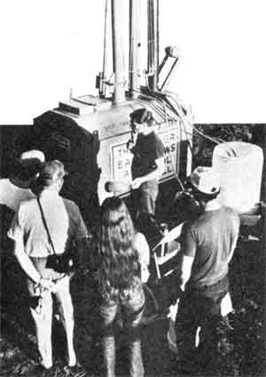

As most of you already know, MOTHER'S alcohol fuel research has by no means been limited to our Henderson-ville, North Carolina "home base". Nor, for that matter, has our work been confined to converting "earthbound" forms of transportation to run on ethanol . . . see our story on the Experimental Aircraft Association's Oshkosh, Wisconsin Fly-In (in MOTHER NO. 60, page 99).
So, with the experience of one aviation event already under their belts, MOTHER'S alcohol crew members didn't think twice when the kind folks at the EAA invited them to attend the "Oshkosh of the East", Tullahoma's 1979 Fly-In, which took place at Soesbe-Martin Field on the outskirts of that small Tennessee city.
Despite the fact that 1979 marked the first year the Tullahoma event had ever been held-not to mention that the exhibit was nearly drowned out by heavy rains during its initial three days-Tullahoma '79 proved to be an instant success. In fact, some 25,000 people (and 203 aircraft) showed up for the meet!
As far as MOTHER'S people were concerned, of course, fuel alcohol was the name of the air show game. So-immediately upon arriving at the field-the crew proceeded to convert one of the EAA's Volkswagen dune-buggy field cars to burn ethanol ... a process that took less than 40 minutes.
In addition to preparing the cut-down VW, MOM'S workers made themselves available to EAA mechanics who were busily converting a single-engine Pober Pixie (the aircraft experts-as it turned out-really didn't need any help . . .after all, they'd already "learned alcohol" at Oshkosh), and soon that sport airplane was flying with the best of them.
But the big news at Tullahoma was MOTHER'S Impressive 6-inch-column still (see the story on page 87 of this issue) ... all 15 feet of which guaranteed that anyone walking near the alcohol exhibit would have his or her curiosity sufficiently aroused to take a look. Naturally, the distillery's liquid product was used to power all sorts of equipment: including our portable generator, a fuel oil furnace, one of Traction, Inc.'s unusual Quadractors (described in MOTHER NO. 58, page 46), and of course MOTHER'S own alcohol-powered truck.
Just to "round out" the variety of vehicles and machinery using alcohol fuel at the event, MOM'S people took advantage of the opportunity to tie up with Rotec Engineering, Inc.-a firm that manufactures ultralight aircraft-in order to prove that even a small two-cycle engine can be easily (and successfully) adapted to airborne ethyl alcohol use.
All in all, the Tullahoma event proved to be one worth attending, both for MOTHER'S crew and for the interested public. If you missed the show this time around, plan to catch it next year at Tullahoma, Tennessee . . . from October 1 through October 5!
EDITOR'S NOTE: A one-year EAA membership-which includes 12 issues of the organization's excellent publication, Sport Aviation-can be obtained for $25 by writing to the Experimental Aircraft Association, Dept. TMEN, Box 229, Hales Corners, Wisconsin 53130. In addition, you can get more information-in catalog form-on Rotec's product offerings by sending $5.00 to Rotec Engineering, Inc., Dept. TMEN, P.O. Box 124, Duncanville, Texas 75116.
The back issues of this publication mentioned above are available-for $3.00 each plus $1.00 shipping and handling per order-from THE Mother Earth News (restricted) , P.O. Box 70, Hendersonville, North Carolina 28739.
|
 [1] A two-cycle Rotec Riser ""lifts off"" on ethanol. [2] Take your pick . . . each machine is alcohol powered. |
[3] An EAA dune-buggy?converted to alcohol in only an hour?gets a refill, courtesy of MOTHER. [4] Even the Pober Pixie burns alky fuel! |
|